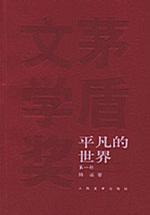

好书推荐

白夜行 [日]东野圭吾
《白夜行》是东野圭吾迄今口碑最好的长篇杰作，具备经典名著的一切要素：
一宗离奇命案牵出跨度近20年步步惊心的故事：悲凉的爱情、吊诡的命运、令人发指的犯罪、复杂人性的对决与救赎……
盗墓笔记 南派三叔
五十年前，一群长沙土夫子（盗墓贼）挖到一部战国帛书，残篇中记载了一座奇特的战国古墓的位置，但那群土夫子在地下碰上了诡异事件，几乎全部身亡。
五十年后，其中一个土夫子的孙子在先人笔记中发现了这个秘密，他纠集了一批经验丰富的盗墓高手前去寻宝。但谁也没有想到，这个古墓中竟然有着这么多诡异的事物：七星疑棺、青眼狐尸、九头蛇柏……

平凡的世界 路遥
《平凡的世界》是一部现实主义小说，也是一部小说形式的家族史。作者浓缩了中国西北农村的历史变迁过程， 在小说中全景式地表现了中国当代城乡的社会生活。在近十年的广阔背景下，通过复杂的矛盾纠葛， 刻划社会各阶层众多普通人的形象。劳动与爱情，挫折与追求，痛苦与欢乐，日常生活与巨大社会冲突， 纷繁地交织在一起，深刻地展示了普通人在大时代历史进程中所走过的艰难曲折的道路。